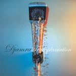

Home Artist links Label link

Djamra - Transplantation
| Artist: | Djamra |
| Title: | Transplantation |
| Label: | Musea/Poseidon Records FGBG4523/PRF-015 |
| Length(s): | 61 minutes |
| Year(s) of release: | 2003 |
| Month of review: | [01/2004] |
Line up
Masaharu Nakakita - bass
Shinji Kitamura - alt sax
Dai Akahani - trumpet
Akihiro Enomoto - drums
Tracks
| 1) | Time Flies Like An Arrow (2 Horns Version) | 4.19
|
| 2) | Channeling | 0.40
|
| 3) | Assassin In Sin | 4.23
|
| 4) | Neo Skin | 4.11
|
| 5) | Mood | 5.50
|
| 6) | Nest | 6.43
|
| 7) | Time Flies Like An Arrow (3 Horns Version) | 4.59
|
| 8) | Hz | 6.00
|
| 9) | Pliable Clockwork | 2.08
|
| 10) | The Cave | 6.20
|
| 11) | To India | 15.42
|
Summary
The music
Djamra is a band with a line up that's quite heavy on the brass. As might be expected, they don't take prisoners. This is pretty much an avant jazz album. There's a lot of dissonant and near dissonant stuff on, but despite the fact that all expectations point in the other direction, we are not drowned out in endless meandering jazz soloing. Sure, there is the odd bit of soloing going on, but it's sparse. Most of the time the instruments are made to sound fresh and lively. The rather extreme use that's made of the brass, at times reminds me of the American jazzcore band Harmless, except for the fact that this band does not feature vocals and turns a bit more abrasive. Then, on the other hand, we find the typical Mexican trumpet playing sound at various times.
To India displays a surprising sitar start, but turns out a very diverse track. The band scores bonus points on the Noam Chomsky quote "Time flies like an arrow", a sentence intended to show the ambiguity of natural language (never mind the fact that a time fly is a somewhat odd beast). But I guess that's just my mind bends...
Conclusion
I would guess that this stuff would lay pretty heavy on the average stomach. The music is strewn with experiment and dissonants, at times pretty hard and with an abrasive sauce. What it does achieve, by a margin, is the almost Poseidon trademark of jazz music that is far more lively than normal. I do miss vocals, or some other kind of lead at times, since the brass is a bit dominant now. At the end this one falls out to the right side, but I fancy that the audience for this sort of music could be pretty small.
© Roberto Lambooy